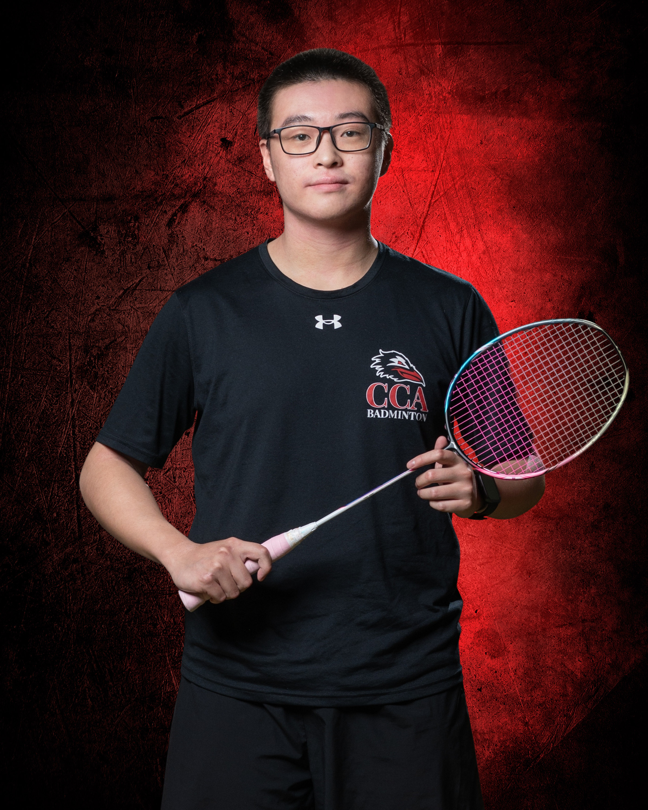
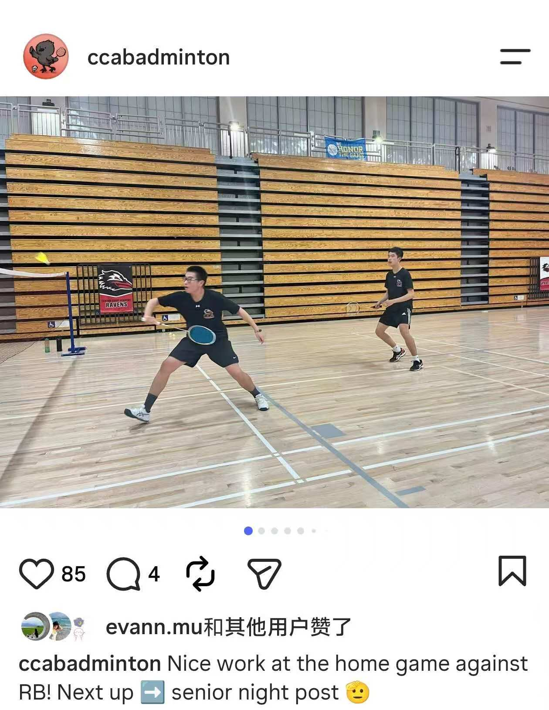
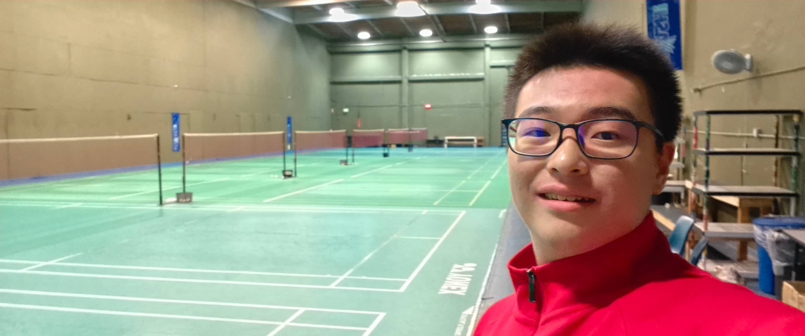

03 / BADMINTON
On the
badminton court.
I’ve played on CCA’s badminton team for three years, including two years on varsity. Here are a few photos from school matches and time at the courts.

CANYON CREST ACADEMY / BADMINTONTHE PRACTICE BEHIND THE MATCH
Playing for CCA.
In a match, I have to keep watching: where my opponent is, where the shuttle is going, and how I can set up the next shot.
I like having teammates to practice and compete with. The school portrait is the formal version; the other photos show more of what being on the team looks like.
MATCHES & EVERYDAY PRACTICE
Part of a team.
These moments show both sides of the sport: representing my school and returning to the court to keep improving.




KEEP EXPLORING
A different kind of teamwork.
Explore how I worked with other students in USC and Rose-Hulman engineering programs.